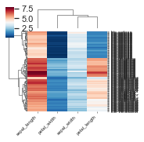
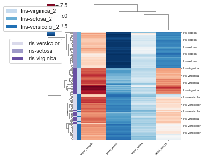
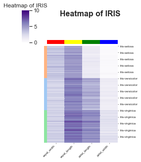
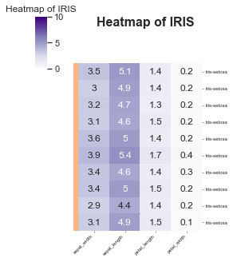
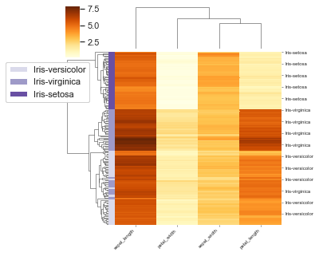

Heatmap¶
Calls seaborn heatmap with some extra tweaks.
Parameters:
df: pd.DataFrame,
chart_columns: list --> list of strings []
row_index: str --> row column that you want to have
title='' --> string title
xlabel='' --> string x label
ylabel='' --> string y label
cluster_rows=True --> whether or not you want to cluster the rows
cluster_cols=True --> whether or not you want to cluster the columns
row_colours=None --> a list of lists [[c1, c2, .... ], []] # need a colour for each value in the datasets
col_colours=None,
vmin=None, --> limit for the hue
vmax=None,
linewidths=0.5,
x_tick_labels=1,
figsize=(3, 3),
title_font_size=8,
label_font_size=6,
title_font_weight=700,
cmap='RdBu_r',
annot=False, --> annotation on the top of the heatmap could be a value or a string need one for each
config={}
Config options = any of the parameters with the same name but with in a dictionary format instead, and also includes default parameters for the visualisation such as the font family and font.
Example config:
config={'palette': ['red', 'yellow', 'pink'],
'figsize':(4, 5), # Size of figure (x, y)
'title_font_size': 16, # Size of the title (pt)
'label_font_size': 12, # Size of the labels (pt)
'title_font_weight': 700, # 700 = bold, 600 = normal, 400 = thin
'font_family': 'sans-serif', # 'serif', 'sans-serif', or 'monospace'
'font': ['Tahoma'] # Default: Arial # http://jonathansoma.com/lede/data-studio/matplotlib/list-all-fonts-available-in-matplotlib-plus-samples/
}
Loading data¶
[1]:
import pandas as pd
from sciviso import Barchart, Boxplot, Heatmap, Histogram, Scatterplot, Violinplot, Volcanoplot, Line
import matplotlib.pyplot as plt
df = pd.read_csv('iris.csv')
df
[1]:
| sepal_length | sepal_width | petal_length | petal_width | label | |
|---|---|---|---|---|---|
| 0 | 5.1 | 3.5 | 1.4 | 0.2 | Iris-setosa |
| 1 | 4.9 | 3.0 | 1.4 | 0.2 | Iris-setosa |
| 2 | 4.7 | 3.2 | 1.3 | 0.2 | Iris-setosa |
| 3 | 4.6 | 3.1 | 1.5 | 0.2 | Iris-setosa |
| 4 | 5.0 | 3.6 | 1.4 | 0.2 | Iris-setosa |
| ... | ... | ... | ... | ... | ... |
| 145 | 6.7 | 3.0 | 5.2 | 2.3 | Iris-virginica |
| 146 | 6.3 | 2.5 | 5.0 | 1.9 | Iris-virginica |
| 147 | 6.5 | 3.0 | 5.2 | 2.0 | Iris-virginica |
| 148 | 6.2 | 3.4 | 5.4 | 2.3 | Iris-virginica |
| 149 | 5.9 | 3.0 | 5.1 | 1.8 | Iris-virginica |
150 rows × 5 columns
Basic Heatmap¶
[2]:
heatmap = Heatmap(df,
chart_columns=['sepal_width', 'sepal_length', 'petal_length', 'petal_width'],
row_index='label')
heatmap.plot(linecolor="") # If you have too many items (like on this plot - you'll have no colour just a black
# plot so I set the linecolor to be "")
plt.show()
/Users/ariane/opt/miniconda3/envs/clean_ml/lib/python3.6/site-packages/seaborn/matrix.py:298: MatplotlibDeprecationWarning: Using a string of single character colors as a color sequence is deprecated since 3.2 and will be removed two minor releases later. Use an explicit list instead.
mesh = ax.pcolormesh(self.plot_data, cmap=self.cmap, **kws)

Add row annotations as colour blocks¶
Add in the colour of each class as a row label.
[3]:
import seaborn as sns
labels = df['label'].values
lut = dict(zip(set(labels), sns.color_palette("pastel", len(set(labels)))))
row_colors = pd.DataFrame(labels)[0].map(lut)
df['label_2'] = labels + '_2'
# Create additional row_colors here based on the values of one column as an example
labels = df['sepal_length'].values.astype(int)
lut = dict(zip(set(labels), sns.color_palette("Greens", len(set(labels)))))
row_colors2 = pd.DataFrame(labels)[0].map(lut)
heatmap = Heatmap(df,
chart_columns=['sepal_width', 'sepal_length', 'petal_length', 'petal_width'],
row_index='label', row_colours=[row_colors, row_colors2], rows_to_colour=['label', 'label_2'],
y_tick_labels=10, # How many skips before a tick on the RHS looks neater
figsize=(5, 5))
heatmap.plot(linecolor="")
plt.show()

Advanced style options¶
Here are some examples with extra style options.
[4]:
# Remove things like the clustering
labels = df['label'].values
lut = dict(zip(set(labels), sns.color_palette("pastel", len(set(labels)))))
row_colors = pd.DataFrame(labels)[0].map(lut)
heatmap = Heatmap(df,
chart_columns=['sepal_width', 'sepal_length', 'petal_length', 'petal_width'],
row_index='label',
title='Heatmap of IRIS',
xlabel='', ylabel='',
cluster_rows=False,
cluster_cols=False,
row_colours=[row_colors],
col_colours=['red', 'yellow', 'green', 'blue'],
vmin=0,
vmax=10, # Setting the top and bottom of the colour scale
linewidths=0.5,
x_tick_labels=1,
figsize=(3, 3),
title_font_size=8,
label_font_size=6,
title_font_weight=700,
cmap='Purples',
annot=False,
y_tick_labels=10,
# Config options = any of the parameters with the same name but with in a dictionary format instead
# You could also pass these as individual parameters, but it's easier to set as a dictionary
# also, then you can re-use it for other charts!
config={'figsize':(4, 5), # Size of figure (x, y)
'title_font_size': 16, # Size of the title (pt)
'label_font_size': 12, # Size of the labels (pt)
'title_font_weight': 700, # 700 = bold, 600 = normal, 400 = thin
'font_family': 'sans-serif', # 'serif', 'sans-serif', or 'monospace'
'font': ['Tahoma'] # Default: Arial # http://jonathansoma.com/lede/data-studio/matplotlib/list-all-fonts-available-in-matplotlib-plus-samples/
})
heatmap.plot(linecolor="")
plt.show()

[5]:
# DO a smaller one with an annotation
versicolor = df[df['label'].values == 'Iris-setosa'][:10]
labels = df['label'].values
lut = dict(zip(set(labels), sns.color_palette("pastel", len(set(labels)))))
row_colors = pd.DataFrame(labels)[0].map(lut)
# Annotate with the values -- this could be anything like a string or something
annot = versicolor[['sepal_width', 'sepal_length', 'petal_length', 'petal_width']].values
heatmap = Heatmap(versicolor,
chart_columns=['sepal_width', 'sepal_length', 'petal_length', 'petal_width'],
row_index='label',
title='Heatmap of IRIS',
xlabel='', ylabel='',
cluster_rows=False,
cluster_cols=False,
row_colours=[row_colors],
vmin=0,
vmax=10, # Setting the top and bottom of the colour scale
linewidths=0.5,
x_tick_labels=1,
figsize=(3, 3),
title_font_size=8,
label_font_size=6,
title_font_weight=700,
cmap='Purples',
annot=annot,
y_tick_labels=1,
# Config options = any of the parameters with the same name but with in a dictionary format instead
# You could also pass these as individual parameters, but it's easier to set as a dictionary
# also, then you can re-use it for other charts!
config={'figsize':(4, 5), # Size of figure (x, y)
'title_font_size': 16, # Size of the title (pt)
'label_font_size': 12, # Size of the labels (pt)
'title_font_weight': 700, # 700 = bold, 600 = normal, 400 = thin
'font_family': 'sans-serif', # 'serif', 'sans-serif', or 'monospace'
'font': ['Tahoma'] # Default: Arial # http://jonathansoma.com/lede/data-studio/matplotlib/list-all-fonts-available-in-matplotlib-plus-samples/
})
heatmap.plot(linecolor="")
plt.show()

Saving¶
Saving is the same for all plots and v simple, just make sure you specify what ending you want it to have.
[7]:
df = pd.read_csv('iris.csv')
labels = df['label'].values
lut = dict(zip(set(labels), sns.color_palette("pastel", len(set(labels)))))
row_colors = pd.DataFrame(labels)[0].map(lut)
# Create additional row_colors here based on the values of one column as an example
labels = df['sepal_length'].values.astype(int)
lut = dict(zip(set(labels), sns.color_palette("Greens", len(set(labels)))))
row_colors2 = pd.DataFrame(labels)[0].map(lut)
heatmap = Heatmap(df,
chart_columns=['sepal_width', 'sepal_length', 'petal_length', 'petal_width'],
row_index='label',
rows_to_colour=['label'],
cmap='YlOrBr',
y_tick_labels=10, # How many skips before a tick on the RHS looks neater
figsize=(5, 5))
heatmap.plot(linecolor="")
plt.savefig('chart.svg') # .png, .pdf, .jpg
plt.savefig('heatmap.png', dpi=300) # .png, .pdf, .jpg
plt.savefig('chart.pdf') # .png, .pdf, .jpg
/Users/ariane/opt/miniconda3/envs/clean_ml/lib/python3.6/site-packages/seaborn/matrix.py:298: MatplotlibDeprecationWarning: Using a string of single character colors as a color sequence is deprecated since 3.2 and will be removed two minor releases later. Use an explicit list instead.
mesh = ax.pcolormesh(self.plot_data, cmap=self.cmap, **kws)
